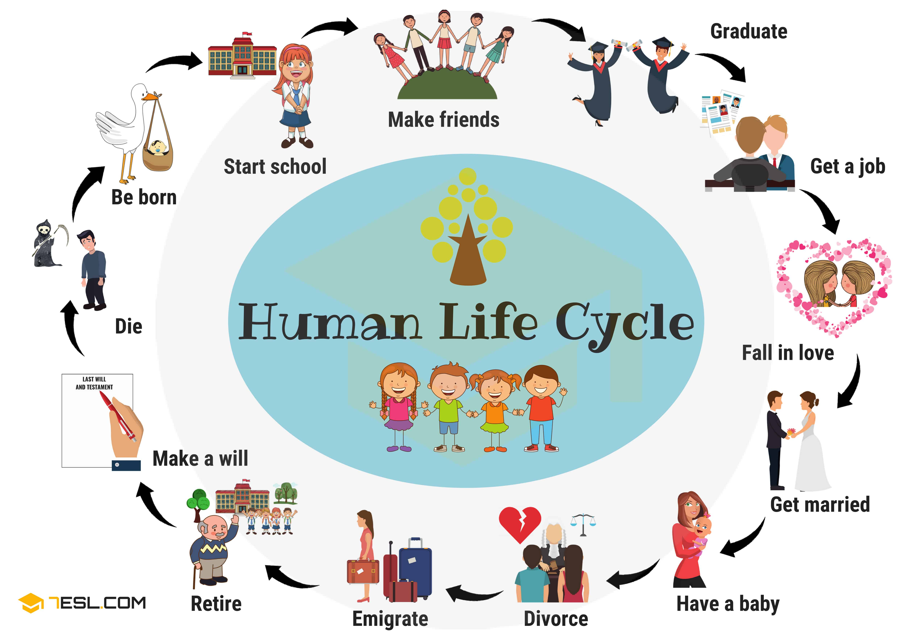
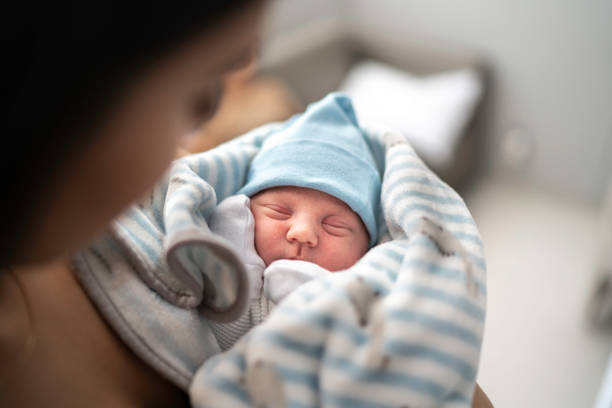
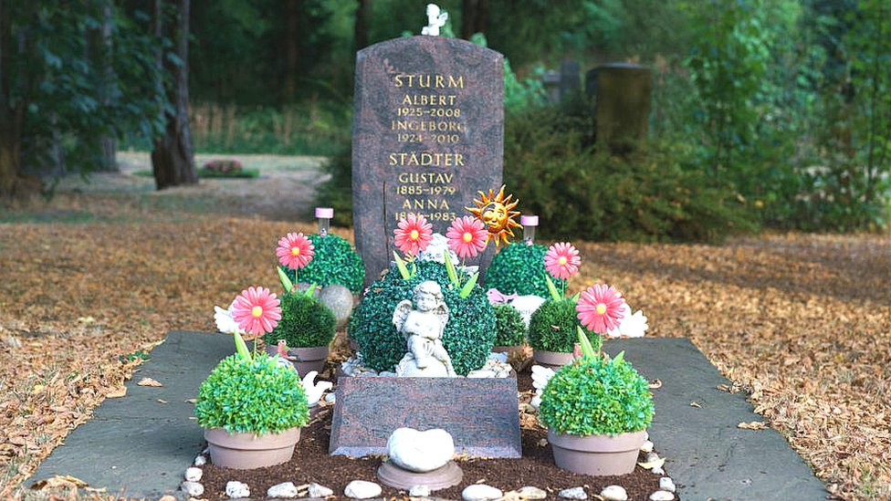
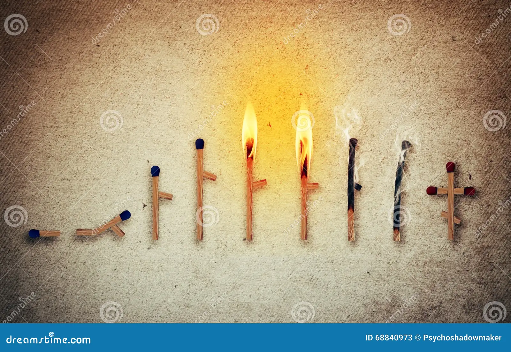

LIFE STAGES

Human Life Cycle has seven stages. The human can moves through during his or her life span. These stages include infancy, early childhood, middle childhood, adolescence, early adulthood, middle adulthood and old age. Every human being born, grows, matures, grows old and dies. These stages are a process of continuous physical, psychological and intellectual changes. It is an irreversible and permanent evolution of changes, our body has stages of growth, maturation and degeneration.
1. BE BORN

Over time, the zygote develops and forms an embryo. Initially, the embryo looks like a cluster of cells, but after eight weeks, the embryo resembles the human body and is called a foetus. During this stage, the foetus is entirely dependent on the female for breathing, eating and other kinds of resources.one a baby is the best creation of the god. two the physical and mental states of a baby is mostly underdeveloped as compared with any adult. person three the caretaking of a baby requires great amount of efforts. four babies are very tender in terms of physical and mental aspects.
Birth of a child can be such a happy time, especially when the little one is very healthy. We all have seen the movies when a new child is born, some of us are lucky to see it first hand. Some of us do get goose bumps, me being one of them. It is just so exciting to see that little life come out of what has been in that big belly for nine months. We sometimes refer to the birth of a child as labor. If only it was as easy as the name sounds. However, it is not. There are three main stages in birth. The first stage is the longest stage that can last 12 to 14 hours with the first birth, and later births are shorter. Dilation and effacement of the cervix take place here. That is when the uterine contractions gradually become more frequent and…show more content…
Getting the most care that they can helps a lot. Even normal babies need the support and to grow a good relationship with their parents to last forever. Although babies spend most of their time sleeping and eating they still have transitions to different stages.
2. SCHOOL STAGE

Early childhood encompasses infancy and the toddler years, from birth through age three. The remaining part of childhood is the period from ages four through eight and is the time when children enter school. A number of critical physiological and emotional changes take place during this life stage.School life is the best phase of a student’s life. It is a time when a student learns new things and explores his/her own potential. It is a time when a student discovers his/her own identity and develops a sense of self-confidence. School life is also a time when a student develops friendships and bonds with classmates.It gives a chance to children to acquire knowledge on various fields of education, such as people, literature, history, mathematics, politics, and other numerous subjects. By obtaining knowledge, a person is in a better position to help other people.
These friendships and bonds often last a lifetime. We have always heard that school life is the best life, enjoy yourself till you are in school make as many mistakes as you can till you are in school, and many such phrases which make the kids who are still in school wonder that why are the elder people hyping this thing up. But as soon as the school life is over and people enter the real world they realize that how right the elders were.School life is a period of one's life that one remembers and cherishes the most. The lessons learned in the school days stay with the person forever as their guiding light. Students should enjoy their school life to the fullest. Students should maintain a study-life balance while they are in school.
3.ADULTHOOD
College Life
College Life is one of the most remarkable and lovable times of an individual's life. Unlike School Life, College Life has a different experience, and a person needs to have this experience in his/her life. College Life exposes us to whole new experiences which we always dream of experiencing after our school life. Lucky are those who get the chance to enjoy their college life, as many people don't get this chance due to their circumstances or financial issues. For every person, College Life has a different meaning. While some people spend their college life partying with friends, others become more cautious about their careers and study hard. Whatever the way, every individual enjoys their college life and always wishes to relive that time once it is over.
Love Life
Human beings love life in spite of troubles and sufferings because of the existence of several natural and beautiful things around them. These things of beauty never fade. They give joy and optimism to human mind, and thus, help in overcoming or bearing the troubles and sufferings.Love is a source of motivation and strength. It reforms bad character, improves one's self-worth and esteem, and builds trust among people. Love also creates a healthy working environment and strengthens family ties. Now that you know the importance of love in our lives, never give up on it.
Graduation

The purpose of a high school graduation ceremony is to celebrate students who have successfully met the academic and extracurricular requirements for graduation. The ceremony provides a public venue in which graduating students receive their diplomas, marking their official graduation from high school.Graduation is the awarding of a diploma to a student by an educational institution. It may also refer to the ceremony that is associated with it. The date of the graduation ceremony is often called graduation day.It helps to get a good job, which is essential for enhancing your earning capacity and financial security. There are many companies who prefer hiring graduates because they have the right skills. And knowledge that are needed in their organizations.
“Be bold, be courageous, be your best.”
4.CARRIER STAGE
Career stages are important to help differentiate your goals throughout your professional life. Some stages demand ambition and promote growth while others offer stability and encourage rest. Having a general framework for your career can help you evaluate your current status and plan for the future.
* Exploration(Typical age range: 21-25)
Exploration refers to the stage before gaining permanent employment. Those in this stage may be finishing an undergraduate or graduate degree. This stage shapes the direction of your professional ambitions.
* Establishment(Typical age range: 25-35 years old)
The establishment stage includes your initial job search, applying for a job and accepting your first long-term position. You are likely to accept an entry-level or mid-level position with comparably minor responsibilities.
*Mid-career(Typical age range: 35-45 years old)
This stage may be characterized by either career stability and progression or a transition into a new profession or field. Many employees in this stage reach their peak levels of productivity and maintain a skill set specific to their role. These years will demonstrate your commitment to your work and solidify your position.
*Late-career(Typical age range: 45-55 years old)
Presuming that you progressed through the mid-career stage successfully, the late-career stage can be an opportunity for a less demanding work environment. Rather than learning or obtaining new skills, the late-stage employee can teach others and begin identifying and training a successor.
5.RETIREMENT STAGE
During the retirement phase of the family life cycle, many changes occur in your life. Welcoming new family members or seeing others leave your family is often a large part of this stage as your children marry or divorce or you become a grandparent.This stage can be a great adventure where you are free from the responsibilities of raising your children and can simply enjoy the fruits of your life’s work. Challenges you may face include being a support to other family members, even as you are still exploring your own interests and activities or focusing on maintaining your relationship. Many people are caring for elderly parents at this time. You may feel challenged by their emotional, financial, and physical needs while trying to help them keep their independence.
You may experience declining physical and mental abilities or changes in your financial or social status. Sometimes you must deal with the death of other family members, including your partner. The quality of your life at this stage depends on how well you adjusted to the changes in earlier stages. It often also depends on how well you have cared for your own health up to this point. Normal aging will affect your body, resulting in wrinkles, aches, pains, and loss of bone density. The chances of having a mental or chronic physical illness does increase with age. But aging does not mean you will automatically experience poor health.Retirement can be a fulfilling and happy time. Becoming a grandparent can bring you great joy without the responsibility of raising a child. Those who are without adequate support systems or not well off financially, though, may have a more difficult time in this phase of life.
6.DEATH STAGE

There are three main stages of dying: the early stage, the middle stage, and the last stage. These are marked by various changes in responsiveness and functioning. However, it is important to keep mind that the timing of each stage and the symptoms experienced can vary from person to person. Outlined below is a general look at what to expect during each stage.
The Early Stage of dying, a patient will begin eating and drinking markedly less. This period can last anywhere from a few days to several weeks.The first sign of this stage of dying will be a noticeable drop in interest in food. For many patients, eating becomes more of a burden than a joy at this point. They may also occasionally choke on their fluids and will start to feel full rather quickly.
The Middle Stage of dying is marked by changes in the patient’s physical appearance that could last a few hours or several days.The person will become increasingly less responsive to their surroundings and those around them, to the point where they will eventually become unable to speak or move at all. This is typically seen during the last days of life.
The Final Stage of dying, disorientation and restlessness will grow. There will be significant changes in the patient’s breathing and continence.The patient’s bowel movements may stop entirely, or they may become incontinent. Their breathing may become shallow and irregular, with long pauses that grow frequent as death approaches. There may also be sounds of chest congestion and throat rattling in the last hours
CONCLUSION

Life is too short to waste your time on people who don't respect, appreciate, and value you. Spend your life with people who make you smile, laugh, and feel loved. You cannot control the behavior of others, but you can always choose how you respond to it. More smiling, less worrying.The purpose of life is to live and let live.Life is the gift of God in the form of trust that we will make it meaningful in whatever we can. We are all unique individuals. No one is born like you and no one will ever be, so cherish your individuality. Many times, I come across people accusing God of things that they don't have. The societal living is possible when there are communal harmony and feeling of brotherhood among its members. The institutions of family and marriage contribute to the harmonious living in a society. Peaceful coexistence is the key to a successful life.
********"All The World's a Stage, And All Men And Women Merely Players"********